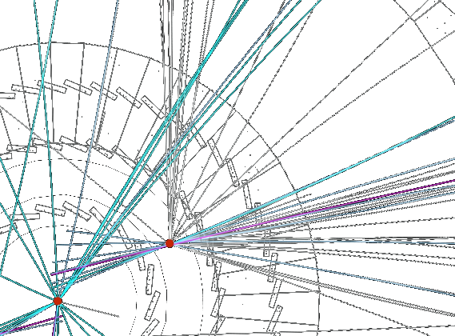

Research
Searching for new phenomena
My research focuses on searches for physics beyond the standard model, especially long-lived particles (LLPs), feebly interacting particles, and dark sectors. I work primarily with the CMS experiment, developing searches for unusual signatures that probe regions of parameter space poorly covered by conventional approaches. My work spans long-lived axion-like particles (ALPs), dark-sector signatures, displaced leptons, and other unconventional LLP signatures.
Making challenging signatures experimentally accessible
Unusual signatures often expose limitations in how collider experiments collect and reconstruct data. A central part of my work is therefore to identify those limitations and develop the triggers, reconstruction algorithms, detector-performance techniques, and analysis tools needed to make the searches possible. My contributions span dedicated LLP triggers from Run 1 through Run 3, displaced-muon and tracking reconstruction, CMS Phase-2 detector studies, high-granularity calorimetry, and lightweight data formats for unconventional analyses.
Building the next experimental opportunities
I also work on experimental programs that extend searches for new phenomena beyond the present CMS program. In CODEX-b, I contribute to developing a dedicated LLP detector and to building the collaboration and physics program needed to move it from concept toward operation. At the Future Circular Collider (FCC), I have worked from physics sensitivity studies toward realistic reconstruction, detector performance, and understanding how future detector choices affect discovery reach.
Current projects and opportunities
I work with students and postdocs on projects ranging from physics searches to trigger, reconstruction, and detector-performance studies. Current work and possible future projects include:
CMS searches
Long-lived axion-like particles, dark showers, and rare or exotic Higgs signatures, using Run 2 and Run 3 data and approaches such as scouting and anomaly detection to access unusual signatures.
Experimental methods
The CMS high-granularity calorimeter (HGCAL), triggers, displaced reconstruction, and detector performance, especially where improved experimental capabilities can open sensitivity to signatures that would otherwise be difficult to detect. Current work includes HGCAL detector-performance studies and preparations for the CMS Phase-2 detector, with possible projects in LLP reconstruction and triggering.
Dedicated and future experiments
FCC-ee projects connecting realistic simulation and reconstruction to studies of LLPs, ALPs, and exotic Higgs decays, as well as CODEX-b projects using CODEX-β data to understand detector response and backgrounds and prepare for a future physics program.
Projects can be shaped for different stages, from Bachelor's and Master's theses to PhD and postdoctoral research. Specific possibilities depend on timing, available positions, and the interests and background of the researcher; if you are interested in these topics, feel free to contact me.
Brief Vita
- Staff Scientist, DESY (Nov. 2022 – present; permanent since May 2026)
- Senior Research Fellow, CERN (Oct. 2020 – Oct. 2022)
- Postdoctoral Researcher, The Ohio State University (Dec. 2015 – Sept. 2020)
- PhD in Physics, Brown University (2015)
- BA in Physics with Honors, Math and English minors, University of Pennsylvania (2008)
Selected publications
A few recent papers representing different parts of my research program. A complete publication list is available on INSPIRE.
- Strategy and performance of the CMS long-lived particle trigger program in proton-proton collisions at √s = 13.6 TeV — CMS Collaboration (2026). A synthesis of the CMS Run 3 LLP trigger program; I was one of four editors and coordinated contributions from 23 analysts.
- Sensitivity of the FCC-ee to axion-like particles at different center-of-mass energies — 2026. A recent FCC-ee ALP study carried out with students I supervised.
- Technical design report for the CODEX-β demonstrator — CODEX-b Collaboration, JINST 20 (2025) T07007. The design report for the CODEX-β demonstrator; I coordinated the publication as CODEX-b Communications Coordinator.
- Dark sector searches with the CMS experiment — CMS Collaboration, Physics Reports 1115 (2025) 448. A synthesis of more than 40 CMS dark-sector searches; I was one of three editors and coordinated contributions from about 50 analysts.
- Top Secrets: Long-Lived ALPs in Top Production — JHEP 10 (2023) 138. Long-lived-ALP phenomenology developed with students and postdocs I supervised and theorists at Radboud University.
- Search for long-lived particles decaying to leptons with large impact parameter in proton-proton collisions at √s = 13 TeV — CMS Collaboration, EPJC 82 (2022) 153. A CMS search I led, including its extension to same-flavor channels and a new data-driven background strategy.
- Fast convolutional neural networks for identifying long-lived particles in a high-granularity calorimeter — JINST 15 (2020) P12006. A proof-of-concept study connecting high-granularity calorimetry and fast pattern recognition to LLP triggering.
- Searching for long-lived particles beyond the Standard Model at the Large Hadron Collider — J. Phys. G 47 (2020) 090501. A community roadmap for LLP searches; I edited three chapters and contributed to a fourth. Recipient of a 2023 IOP Top Cited Paper Award.
Science Communication
- Could unknown particles be hiding at the LHC? New prototype takes its first data — Quantum Universe, 2026. A look at CODEX-β's first LHC data and what the demonstrator is designed to test.
- Unlocking the vault of new physics — CMS, 2026. How the CMS Run 3 trigger program expands sensitivity to long-lived particles.
- Mapping Uncharted Territory: CMS Reviews Searches for Dark Matter — CMS, 2024. An accessible overview of the CMS dark-sector review and what it says about the search for dark matter.
- Leptons Popping out of Thin Air — CMS, 2022. An explanation of the CMS displaced-lepton search and why long-lived particles can appear away from the collision point.
Interested in working with me?
Send me an email with your CV and interests.